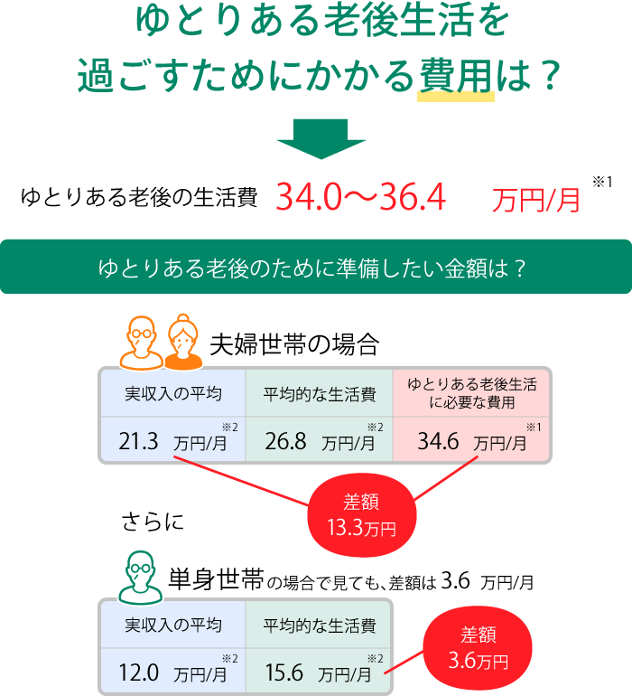
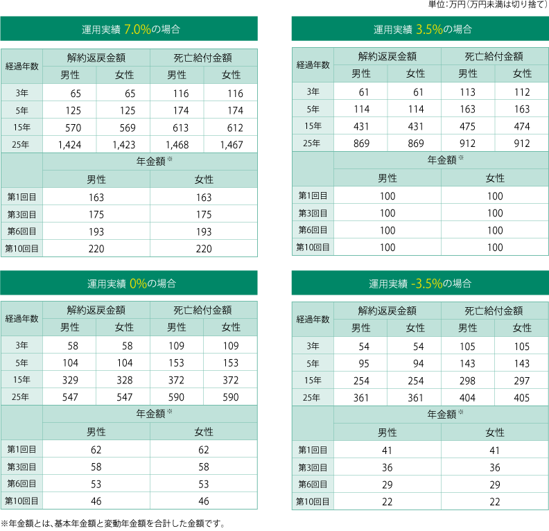
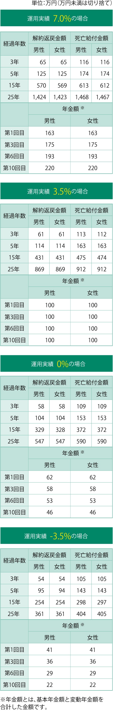
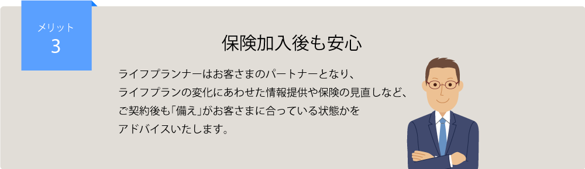
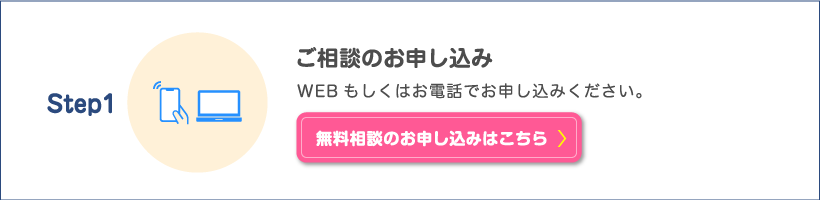
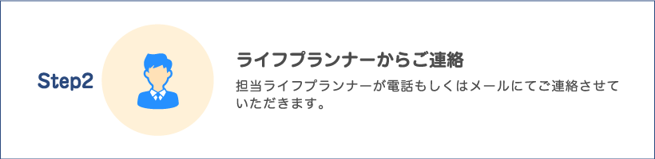
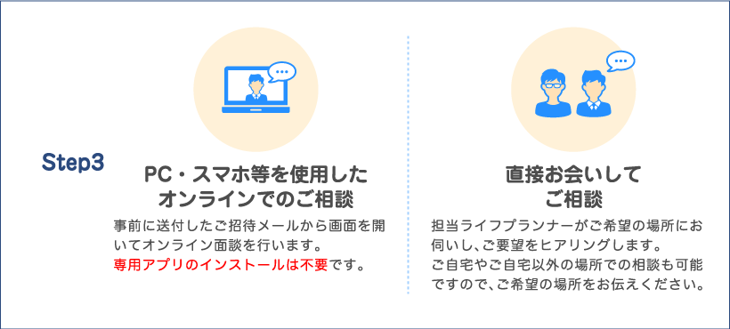
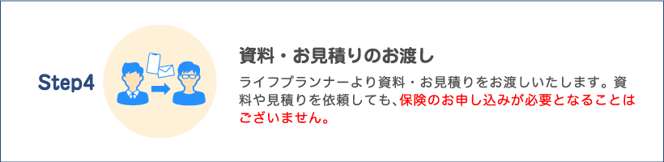
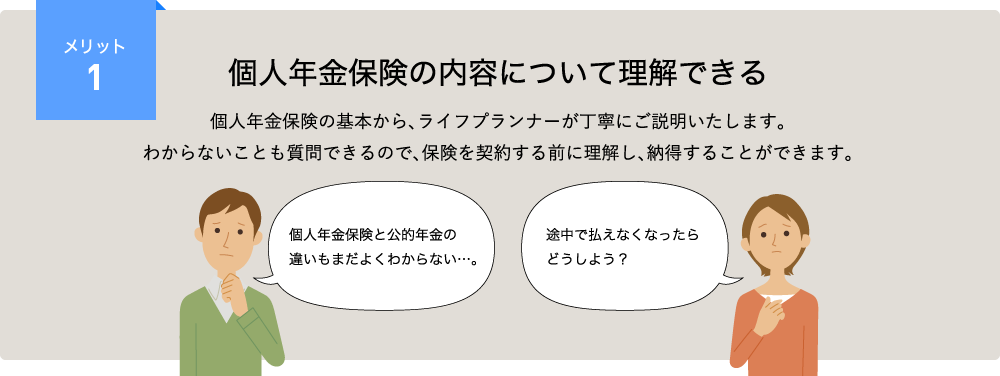
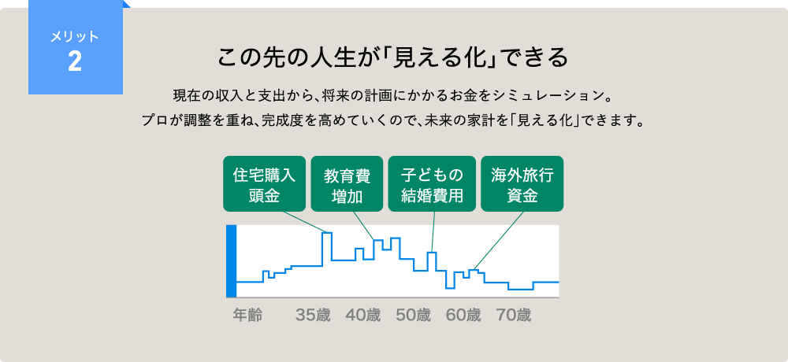

特別勘定の資産の
運用実績に応じて、
年金額・解約返戻金額が
変動します。
年金支払開始日前に死亡されたときは、
死亡給付金をお支払いします。
高度障害状態・身体障害の状態になられ
たときは、以後の保険料のお払い込みは
不要です。
新型コロナウイルスへの感染予防対策を踏まえたソニー生命の対応について
将来の計画や夢を実現しながら
ゆとりある老後を過ごすために
今のうちから「準備」を始めませんか。
老後の必要資金準備のための
生存保障に重点を置いた年金保険です。
個人年金保険とは？
個人年金とは、生命保険の一種で、国民年金・厚生年金・共済年金などの公的年金とは別に保険
会社などと私的に契約する年金保険。老後の資金を計画的にご準備いただけます。

※1. 出典：公益財団法人生命保険文化センター「令和元年度 生活保障に関する調査」
※2. 出典：総務省統計局「令和元年 家計調査」生活費は消費支出と非消費支出の合計
変額個人年金で老後資金つくりをする理由
●被保険者：35歳
●基本年金額：100万円
●年金種類：確定年金
●年金支払期間：10年
●年金支払開始年齢：60歳
●保険料払込期間：60歳まで
●個別扱月払保険料 男性：20,550円 女性：20,490円
特別勘定の資産の運用実績例表（ご契約の場合）


特別勘定とは、変額保険と変額個人年金保険にかかる資産を
他の保険種類の資産と区分し、独立して管理・運用を行う勘定のことです。
ソニー生命では運用方針の異なる8つの特別勘定の中から運用対象として１つないし
複数の特別勘定をお選びいただけます。

個人年金保険は将来に関わる保障です。
契約してから年金の受け取り完了まで長期にわたる保険になりますので、
保険会社の安全性はとても重要です。
2019年度末の
ソルベンシー・マージン比率は
2,476.3％
と、高い水準を確保しています。
ソルベンシー・マージン＝[支払余力]
大震災や株の大暴落など、通常の予測を超えて
発生するリスクに対して、どれくらい余力を持ってい
るか判断するための行政監督上の指標のひとつで
す
※ソルベンシー・マージン比率はソルベンシー・マージン総額（1,412,772百万円）÷リスクの合計額（114,101百万円）の1/2×100で算出したものです。
※上記は、保険業法施行規則第86条、第87条、平成8年大蔵省告示第50号の規定に基づいて算出しております。最低保証リス
ク相当額は標準的方式を用いて算出しています。なお、平成22年内閣府令第23号、平成22年金融庁告示第48号により、ソルベ
ンシー・マージン総額およびリスクの合計額の算出基準について一部変更（マージン算入の厳格化、リスク計測の厳格化・精緻化
等）がなされております。
新型コロナウイルスへの感染予防対策を
踏まえたソニー生命の対応について
ソニー生命では、「新型コロナウイルス感染予防対策」として、保険相談にあたっては、
お客さまと従業員の健康と安全の確保を最優先とし、以下の取組みを継続して実施しています。
- 毎日の検温実施・記録を徹底する
- 除菌（手洗い・うがい・アルコール消毒等）を徹底する
- お客さま面談時のマスク着用を遵守する
- お客さまへの訪問・面談の際は、お客さまへ事前に面談への同意・希望を確認する
- 従業員自身の体調がすぐれない場合は、直接の面談による営業活動や出社を禁止する
- お客さまへ従来の直接の面談に加え、リモートでの対応が可能であることをお伝えする
- 高齢者や基礎疾患があるお客さまとの面談は、極力リモートでの対応をご案内する
「選べる」保険の相談スタイル
ソニー生命なら
ご契約もオンラインで可能！
※1 保険商品によってはオンラインでご契約いただけない商品もございます。ご了承ください。




＜オンライン相談の注意事項＞
- パケット通信料について
スマートフォンをご利用の場合、別途携帯会社のパケット通信料（お客さま負担）が発生いたします。「パケット放題」やWi-Fiのご利用など、事前
に料金プランや通信環境をお確かめの上で実施してください。
※オンライン相談は1時間あたり約2ギガバイト（2GB）のパケット通信が発生します。
- ご利用環境について
お客さまのご利用環境によっては、本サービスをご利用できない場合があります。
-
ご留意ください。
保険のお申し込みについて
●商品の概要を説明しています。詳しくは商品パンフレットをご覧ください。
ご契約の際には、「ご契約のしおり・約款」「契約概要」「注意喚起情報」を必ずご覧ください。
商品パンフレット 変額個人年金保険（無配当）
個人年金保険を考えるポイントは、
これから先の人生設計 にあります。
「ひとりで考えるのは難しそう…」という方へ
ソニー生命のライフプランナーなら
個人年金保険の詳しい説明はもちろん
一人ひとりに合わせたプランを一緒に考えます。
ソニー生命のライフプランナーは、金融全般に豊富な知識を持つプロフェッショナル。
保険はもちろんのこと、家計や投資・貯蓄といった
幅広い視点でお客さまの悩みに寄り添っていきます。


お電話でのご相談はこちら
ソニー生命カスタマーセンター
0120-158-679
営業時間 9:00～17:30
※日曜日、ゴールデンウィーク、年末年始を除く
ご注意事項
- 上記は2021年1月2日時点の保険料および当社の取扱に基づき作成しております。
- 商品の概要を説明しています。詳しくは商品パンフレットをご覧ください。ご契約の際には、「ご契約のしおり・約款」「契約概要」「注意喚起情報」を必ずご覧ください。
-
重要事項説明書（補足資料）の確認はこちら 資産運用のご経験が少ない方におかれましては、
資産運用スタートブック」または「変額 虎の巻」をご覧ください。
資産運用スタートブック
変額 虎の巻
-
変額保険のご検討にあたっては、以下もご参考にご利用ください。
リスク許容度ナビ
┗お客さまの資産運用に対する考え方をお伺いし、リスク許容度をご案内しています。
ポートフォリオ・シミュレーション
┗資産形成のための運用スタンスを自由に調整して、最適なポートフォリオを構築することができます。また、過去や将来のパフォーマンス分析など各種シミュレー
ションを行えます。
-
ご注意
※変額個人年金保険は生命保険です。預金とは異なり、元本割れすることがあります。
※変額個人年金保険は、準用する金融商品取引法の対象となる保険商品です。 商品の詳細につきましては商品パンフレット（PDF）をご覧ください。
※お申し込みに際しては、事前に交付される「重要事項説明書（注意喚起情報・契約概要）」「ご契約のしおり・約款」「特別勘定のしおり」をご確認ください。
※変額個人年金保険は、運用実績に基づいて年金額・解約返戻金が変動（増減）するため、損失が生じるおそれがあります。
※各特別勘定への資産の繰入比率を変更した場合や、積立金を移転した場合、選択された特別勘定の種類によっては運用リスクが変わることがあります。
※変額個人年金保険は、お払い込みいただく保険料のうち、その一部は保険契約の締結・維持・保障・保険料払込免除などに要する費用等に充てられ、それらを除いた金額が特別勘定で運用されます。また、ご契約後も定期的に積立金から保険契約の維持・死亡保障などに要する
費用や特別勘定の運営に要する費用等が控除されます。